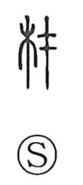

材

Kun: | On: zai
material ・ timber ・ talent
Explanation
Shirakawa takes 材 as a phono‑semantic compound: 木 provides the concrete sphere of wood and things made from it, while 才 supplies both sound and an older sacred image. In 才 he sees a sai—an offering receptacle for covenantal petitions—fixed to the top of an erected tree used as a holy signpost; this act of consecration came to imply what is present from the beginning and the innate working we call talent. With 木 added, the graph settles on the tangible sense of wood as material—rough lumber and timber—yet in compounds it still carries the echo of inherent endowment, yielding words for talent and capability.